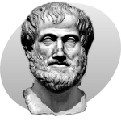

ARISTOTLE
Knowing yourself is the beginning of all wisdom.
Aristotle, whose name means "the best purpose", was born in 384 BC in Stagira, Chalcidice, about 55 km (34 miles) east of modern-day Thessaloniki. His father Nicomachus was the personal physician to King Amyntas of Macedon.
At about the age of eighteen, Aristotle moved to Athens to continue his education at Plato's Academy. He remained there for nearly twenty years before leaving Athens in 348/47 BC.
Aristotle was invited by Philip II of Macedon to become the tutor to his son Alexander in 343 BC. Aristotle was appointed as the head of the royal academy of Macedon. During that time he gave lessons not only to Alexander, but also to two other future kings: Ptolemy and Cassander.
By 335 BC, Artistotle had returned to Athens, establishing his own school there known as the Lyceum. Aristotle conducted courses at the school for the next twelve years. This period in Athens, between 335 and 323 BC, is when Aristotle is believed to have composed many of his works. He wrote many dialogues of which only fragments have survived.
Following Alexander's death, anti-Macedonian sentiment in Athens was rekindled. In 322 BC, Demophilus and Eurymedon the Hierophant reportedly denounced Aristotle for impiety, prompting him to flee to his mother's family estate in Chalcis, at which occasion he was said to have stated: "I will not allow the Athenians to sin twice against philosophy" – a reference to Athens's prior trial and execution of Socrates. He died in Euboea of natural causes later that same year.
(Read more)For the things we have to learn before we can do, we learn by doing.
Aristotle not only studied almost every subject possible at the time, but made significant contributions to most of them. His combined works constitute a virtual encyclopedia of Greek knowledge.
According to Aristotle, the elements which compose the terrestrial spheres are different from that constituting the celestial spheres. He believed that four elements make up everything under the Moon, i.e. everything terrestrial: earth, air, fire and water. He also held that the heavens are made of a special weightless and incorruptible (i.e. unchangeable) fifth element called "aether".
Aristotle suggested that the reason for anything coming about can be attributed to four different types of simultaneously active causal factors:
- The material cause of a thing is that of which it is made. For a table, that might be wood; for a statue, that might be bronze or marble.
- The formal cause is its form, i.e., the arrangement of that matter. It tells us what a thing is, that any thing is determined by the definition, form, pattern, essence, whole, synthesis or archetype. Plainly put, the formal cause is the idea existing in the first place as exemplar in the mind of the sculptor, and in the second place as intrinsic, determining cause, embodied in the matter. Formal cause could only refer to the essential quality of causation. A simple example of the formal cause is the mental image or idea that allows an artist, architect, or engineer to create his drawings.
- The efficient cause is "the primary source", or that from which the change under consideration proceeds. It identifies 'what makes of what is made and what causes change of what is changed' and so suggests all sorts of agents, nonliving or living, acting as the sources of change or movement or rest. So, take the two dominoes, this time of equal weighting, the first is knocked over causing the second also to fall over.
- The final cause is its purpose, or that for the sake of which a thing exists or is done. The final cause is that for the sake of which something takes place, its aim or teleological purpose: for a germinating seed, it is the adult plant, for a ball at the top of a ramp, it is coming to rest at the bottom, for an eye, it is seeing, for a knife, it is cutting.
Aristotle is the earliest natural historian whose work has survived in some detail. Aristotle certainly did research on the natural history of Lesbos, and the surrounding seas and neighbouring areas. The most striking passages are about the sea-life visible from observation on Lesbos and available from the catches of fishermen. His observations on catfish, electric rays and angler-fish are detailed, as is his writing on cephalopods, namely, Octopus, Sepia (cuttlefish) and the paper nautilus (Argonauta argo). His description of the hectocotyl arm, used in sexual reproduction, was widely disbelieved until its rediscovery in the 19th century. He separated the aquatic mammals from fish, and knew that sharks and rays were part of the group he called Selachē (selachians).
Aristotle distinguished about 500 species of birds, mammals and fishes. His classification of living things contains some elements which still existed in the 19th century. What the modern zoologist would call vertebrates and invertebrates, Aristotle called 'animals with blood' and 'animals without blood' (he did not know that complex invertebrates do make use of hemoglobin, but of a different kind from vertebrates). Animals with blood were divided into live-bearing (mammals), and egg-bearing (birds and fish). Invertebrates ('animals without blood') are insects, crustacea (divided into non-shelled – cephalopods – and shelled) and testacea (molluscs). In some respects, this incomplete classification is better than that of Linnaeus, who crowded the invertebrata together into two groups, Insecta and Vermes (worms).
With the Prior Analytics, Aristotle is credited with the earliest study of formal logic, and his conception of it was the dominant form of Western logic until 19th century advances in mathematical logic. Kant stated in the Critique of Pure Reason that Aristotle's theory of logic completely accounted for the core of deductive inference. Aristotle "says that 'on the subject of reasoning' he 'had nothing else on an earlier date to speak of'". However, Plato reports that syntax was devised before him, by Prodicus of Ceos, who was concerned by the correct use of words. Logic seems to have emerged from dialectics; the earlier philosophers made frequent use of concepts like reductio ad absurdum in their discussions, but never truly understood the logical implications. Even Plato had difficulties with logic; although he had a reasonable conception of a deductive system, he could never actually construct one, thus he relied instead on his dialectic.
What we today call Aristotelian logic, Aristotle himself would have labeled "analytics". The term "logic" he reserved to mean dialectics. Most of Aristotle's work is probably not in its original form, because it was most likely edited by students and later lecturers. The logical works of Aristotle were compiled into six books in about the early 1st century CE (Categories, On Interpretation, Prior Analytics, Posterior Analytics, Topics, On Sophistical Refutations.
Aristotle considered ethics to be a practical rather than theoretical study, i.e., one aimed at becoming good and doing good rather than knowing for its own sake. He wrote several treatises on ethics, including most notably, the Nicomachean Ethics. Aristotle taught that virtue has to do with the proper function of a thing. An eye is only a good eye in so much as it can see, because the proper function of an eye is sight. Aristotle reasoned that humans must have a function specific to humans, and that this function must be an activity of the psuchē (normally translated as soul) in accordance with reason (logos). Aristotle identified such an optimum activity of the soul as the aim of all human deliberate action, eudaimonia, generally translated as "happiness" or sometimes "well being". To have the potential of ever being happy in this way necessarily requires a good character. Aristotle taught that to achieve a virtuous and potentially happy character requires a first stage of having the fortune to be habituated not deliberately, but by teachers, and experience, leading to a later stage in which one consciously chooses to do the best things.
In addition to his works on ethics, which address the individual, Aristotle addressed the city in his work titled Politics. Aristotle considered the city to be a natural community. Moreover, he considered the city to be prior in importance to the family which in turn is prior to the individual, "for the whole must of necessity be prior to the part". He also famously stated that "man is by nature a political animal" and also arguing that humanity's defining factor among others in the animal kingdom is its rationality. Aristotle conceived of politics as being like an organism rather than like a machine, and as a collection of parts none of which can exist without the others. Aristotle's conception of the city is organic, and he is considered one of the first to conceive of the city in this manner.
Aristotle considered epic poetry, tragedy, comedy, dithyrambic poetry and music to be imitative, each varying in imitation by medium, object, and manner. For example, music imitates with the media of rhythm and harmony, whereas dance imitates with rhythm alone, and poetry with language. The forms also differ in their object of imitation. Comedy, for instance, is a dramatic imitation of men worse than average; whereas tragedy imitates men slightly better than average. Lastly, the forms differ in their manner of imitation – through narrative or character, through change or no change, and through drama or no drama. Aristotle believed that imitation is natural to mankind and constitutes one of mankind's advantages over animals.
Aristotle's psychology, given in his treatise On the Soul, posits three kinds of soul ("psyches"): the vegetative soul, the sensitive soul, and the rational soul. Humans have a rational soul. This kind of soul is capable of the same powers as the other kinds: Like the vegetative soul it can grow and nourish itself; like the sensitive soul it can experience sensations and move locally. The unique part of the human, rational soul is its ability to receive forms of other things and compare them.
According to Aristotle, memory is the ability to hold a perceived experience in your mind and to have the ability to distinguish between the internal "appearance" and an occurrence in the past. In other words, a memory is a mental picture (phantasm) in which Aristotle defines in De Anima, as an appearance which is imprinted on the part of the body that forms a memory. Aristotle believed an "imprint" becomes impressed on a semi-fluid bodily organ that undergoes several changes in order to make a memory. A memory occurs when a stimuli is too complex that the nervous system (semi-fluid bodily organ) cannot receive all the impressions at once. These changes are the same as those involved in the operations of sensation, common sense, and thinking.
Aristotle gives an account of his explanation of sleep in On Sleep and Wakefulness. Sleep takes place as a result of overuse of the senses or of digestion, so it is vital to the body, including the senses, so it can be revitalized. While a person is asleep, the critical activities, which include thinking, sensing, recalling and remembering, do not function as they do during wakefulness.
Dreams do not involve actually sensing a stimulus because, as discussed, the senses do not work as they normally do during sleep. In dreams, sensation is still involved, but in an altered manner than when awake. Aristotle explains the phenomenon that occurs when a person stares at a moving stimulus such as the waves in a body of water. When they look away from that stimulus, the next thing they look at appears to be moving in a wave like motion. When a person perceives a stimulus and the stimulus is no longer the focus of their attention, it leaves an impression. When the body is awake and the senses are functioning properly, a person constantly encounters new stimuli to sense and so the impressions left from previously perceived stimuli become irrelevant. However, during sleep the impressions stimuli made throughout the day become noticed because there are not new sensory experiences to distract from these impressions that were made.[64] So, dreams result from these lasting impressions.
All persons ought to endeavor to follow what is right, and not what is established.
More than 2300 years after his death, Aristotle remains one of the most influential people who ever lived. He contributed to almost every field of human knowledge then in existence, and he was the founder of many new fields. According to the philosopher Bryan Magee, "it is doubtful whether any human being has ever known as much as he did". Among countless other achievements, Aristotle was the founder of formal logic, pioneered the study of zoology, and left every future scientist and philosopher in his debt through his contributions to the scientific method.
(Read more)